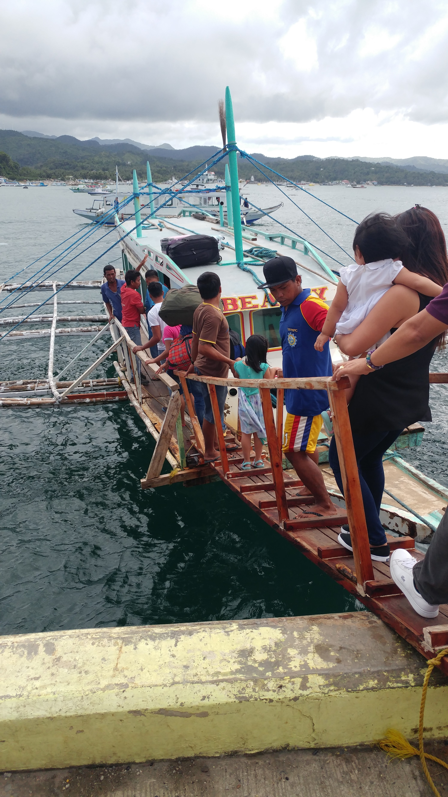
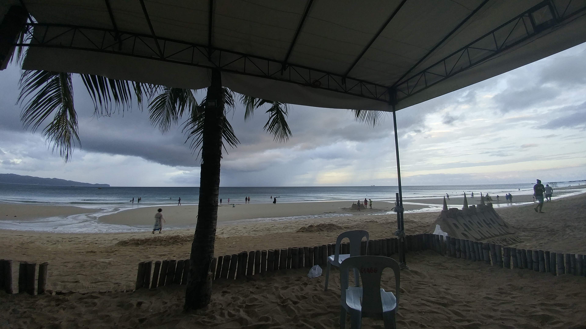
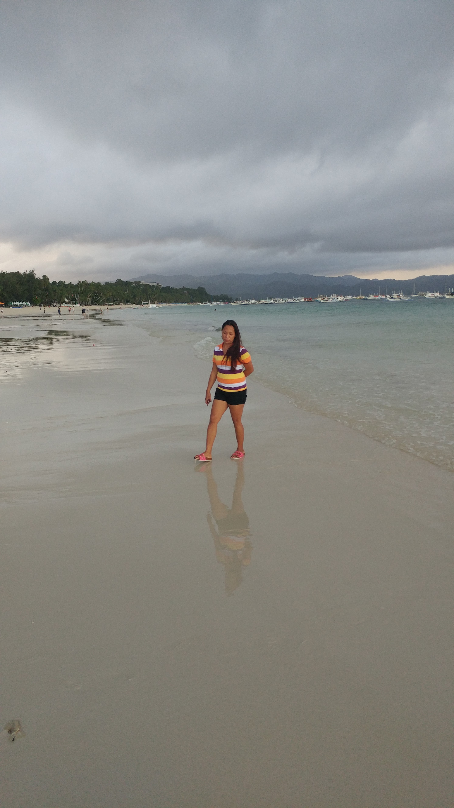
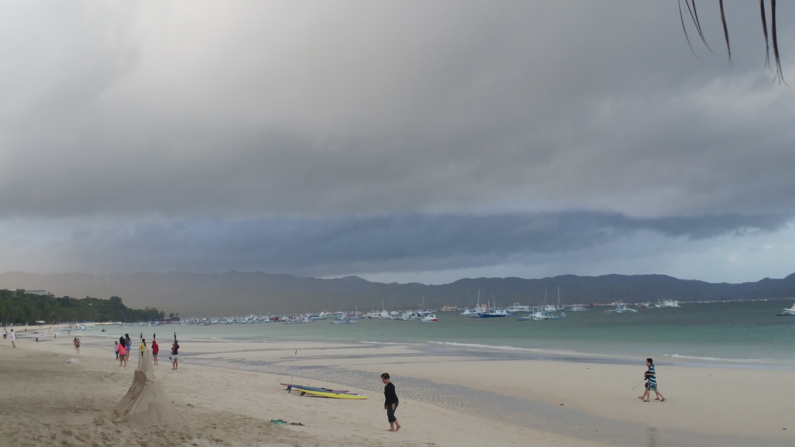

Arriving on Boracay
Getting to Boracay is almost half the fun. First we left from Clark Int. Airport in a twin turbo prop plane. It was my first time in a prop aircraft and I did enjoy the experience. The sound a turbo prop makes is quite different than the sound of a jet engine; and it gives me a type of nostalgic feeling.
Leaving from Clark Int. Airport, we flew for about 1 hour to arrive not at Boracay, but a neighboring island that has an airport on it. Boracay itself has no airport, so getting still required one more step in our trip. After we landed, we had to gather our things and then they bussed us to the docks where we could catch a water taxi to Boracay.
From the docks of Boracay, we took a shuttle to our resort.
One thing to note about Boracay Island (and really The Philippines as a whole) is that it is mostly a cash society. Credit cards are accepted at the major food chains, and stores; but most things on Boracay require cash. Banks or ATM machines are not readily available, so if you plan on enjoying any amenities that aren't included with your room, be prepared to have plenty of cash on hand.


 Back to Top Of Page
Back to Top Of Page
The Beach
I was suprised to see how crowded the beach was. The beach itself is a nice beach with mostly clean sand and water. What I didn't realize was that the beach is lined with resorts one after the other. Boracay Island is apparently a very popular vacation destination because their are crowds of people everywhere. Not really my idea of a relaxing beach vacation.
Besides the crowds of people and resorts, the spaces inbetween are loaded with shops and bars for the tourists.
The resorts hire people to create sand sculptures, but you should know that the artists do ask for a donation to photograph them. While you may think that is rediculous, please remember that most people in the Philippines work for less than US$5.00 per day. So your generosity is greatly appreciated by the local folk.



Back to Top Of Page
New Years Eve
New Years Eve was quite enjoyable on Boracay. I made reservations at one of the nicer resort resturants for the evening where we had a wonderful time dining and having drinks.
After dinner, we wandered around the beach and the resort for awhile until it was time for the fireworks display.
There was an amazing fireworks display that seemed to last forever. All of the resorts have there own fireworks display; and all up and down the beach the fireworks boats line the shore giving an incredible display for as far as you can see. The beach is really super crowded with everybody coming out and lining the beaches to witness the fireworks, and drink and have fun.
Boracay Island was lots of fun and I would love to return someday when we have more time and money to enjoy ourselves with.